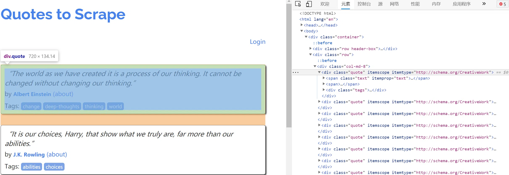
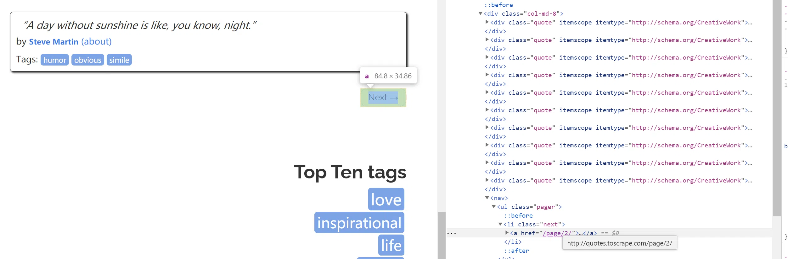
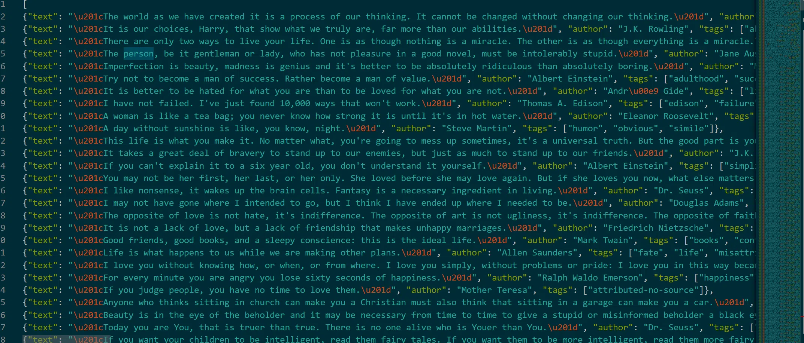

抓取目标
要完成的任务如下。
- 创建一个
Scrapy项目。 - 创建一个
Spider来抓取站点和处理数据。 - 通过命令行将抓取的内容导出。
- 将抓取的内容保存到
MongoDB数据库。
准备工作
安装好scrapy框架、MongoDB和PyMongo库。
创建项目
创建一个Scrapy项目，项目文件可以直接用Scrapy命令生成，命令如下所示：
1 | scrapy startproject tutorial |
这个命令将会创建一个名为tutorial的文件夹，文件夹结构如下所示：
1 | scrapy.cfg # Scrapy 部署时的配置文件 |
创建Spider
Spider是自己定义的类，Scrapy用它从网页里抓取内容，并解析抓取的结果。不过这个类必须继承Scrapy提供的Spider类scrapy.Spider，还要定义Spider的名称和起始请求，以及怎样处理爬取后的结果的方法。
也可以使用命令行创建一个Spider。比如要生成Quotes这个Spider，可以执行如下命令：
1 | scrapy genspider quotes quotes.toscrape.com |
进入刚才创建的tutorial文件夹，然后执行genspider命令。第一个参数是Spider的名称，第二个参数是网站域名。执行完毕之后，spiders文件夹中多了一个quotes.py，它就是刚刚创建的Spider，内容如下所示：
1 | import scrapy |
这里有三个属性——name、allowed_domains和start_urls，还有一个方法parse。
name：它是每个项目唯一的名字，用来区分不同的Spider。allowed_domains：它是允许爬取的域名，如果初始或后续的请求链接不是这个域名下的，则请求链接会被过滤掉。start_urls：它包含了Spider在启动时爬取的url列表，初始请求是由它来定义的。parse：它是Spider的一个方法。默认情况下，被调用时start_urls里面的链接构成的请求完成下载执行后，返回的响应就会作为唯一的参数传递给这个函数。该方法负责解析返回的响应、提取数据或者进一 步生成要处理的请求。
创建Item
Item是保存爬虫数据的容器，它的使用方法和字典类似，不过相比字典，Item多了额外的保护机制，可以避免拼写错误或者定义字段错误。
创建Item需要继承scrapy.Item类，并且定义类型为scrapy.Field的字段。观察目标网站，可以获取到的内容有text、author、tags。
定义Item，此时将items.py修改如下：
1 | import scrapy |
这里定义了三个字段，将类的名称修改为QuoteItem，接下来爬取时会使用到这个Item。
解析Response
parse方法的参数response是start_urls里面的链接爬取后的结果。所以在parse方法中，可以直接对response变量包含的内容进行解析，比如浏览请求结果的网页源代码，或者进一步分析源代码内容，或者找出结果中的链接而得到下一个请求。
首先看看网页结构，如图所示。每一页都有多个class为quote的区块，每个区块内都包含text、author、tags。那么先找出所有的quote，然后提取每一个quote中的内容。

提取的方式可以是CSS选择器或XPath选择器。在这里使用CSS选择器进行选择，parse方法的改写如下所示：
1 | class QuotesSpider(scrapy.Spider): |
对于text，获取结果的第一个元素即可，所以使用extract_first方法，对于tags，要获取所有结果组成的列表，所以使用extract方法。
使用Item
上文定义了Item，接下来就要使用它了。Item可以理解为一个字典，不过在声明的时候需要实例化。然后依次用刚才解析的结果赋值Item的每一个字段，最后将Item返回即可。
QuotesSpider的改写如下所示：
1 | def parse(self, response): |
如此一来，首页的所有内容被解析出来，并被赋值成了一个个QuoteItem。
后续Request
接下来就需要从当前页面中找到信息来生成下一个请求，然后在下一个请求的页面里面找到信息再构造下一个请求。这样循环往复迭代，从而实现整站的爬取。
将刚才的页面拉到最底部，如图所示。

有一个Next按钮，查看一下源代码，可以发现它的链接是/page/2/，实际上全链接就是：http://quotes.toscrape.com/page/2，通过这个链接我们就可以构造下一个请求。
构造请求时需要用到scrapy.Request。这里传递两个参数——url和callback，这两个参数的说明如下。
url：它是请求链接。callback：它是回调函数。当指定了该回调函数的请求完成之后，获取到响应，引擎会将该响应作为参数传递给这个回调函数。回调函数进行解析或生成下一个请求，回调函数如上文的parse()所示。
由于parse就是解析text、author、tags的方法，而下一页的结构和刚才已经解析的页面结构是一样的，所以可以再次使用parse方法来做页面解析。
接下来要做的就是利用选择器得到下一页链接并生成请求，在parse方法后追加如下的代码：
1 | next = response.css('.pager .next a::attr(href)').extract_first() |
第一句代码首先通过CSS选择器获取下一个页面的链接，即要获取a超链接中的href属性。这里用到了::attr(href)操作。然后再调用extract_first方法获取内容。
第二句代码调用了urljoin方法，urljoin()方法可以将相对URL构造成一个绝对的URL。例如，获取到的下一页地址是/page/2，urljoin方法处理后得到的结果就是：http://quotes.toscrape.com/page/2/。
第三句代码通过url和callback变量构造了一个新的请求，回调函数callback依然使用parse方法。这个请求完成后，响应会重新经过parse方法处理，得到第二页的解析结果，然后生成第二页的下一页，也就是第三页的请求。这样爬虫就进入了一个循环，直到最后一页。dont_filter设置为Ture不进行域名过滤，这样就能继续爬取。
通过几行代码，就轻松实现了一个抓取循环，将每个页面的结果抓取下来了。现在，改写之后的整个Spider类如下所示：
1 | import scrapy |
运行
进入目录，运行如下命令：
1 | scrapy crawl quotes |
爬虫一边解析，一边翻页，直至将所有内容抓取完毕，然后终止。
最后，Scrapy输出了整个抓取过程的统计信息，如请求的字节数、请求次数、响应次数、完成原因等。
保存到文件
Scrapy提供的Feed Exports可以轻松将抓取结果输出。例如，想将上面的结果保存成JSON文件，可以执行如下命令：
1 | scrapy crawl quotes -o quotes.json |
命令运行后，项目内多了一个quotes.json文件，文件包含了刚才抓取的所有内容，内容是JSON格式。

另外还可以每一个Item输出一行JSON，输出后缀为jl，为jsonline的缩写，命令如下所示：
1 | scrapy crawl quotes -o quotes.jl |
或
1 | scrapy crawl quotes -o quotes.jsonlines |
输出格式还支持很多种，例如csv、xml、pickle、marshal等，还支持ftp、s3 等远程输出，另外还可以通过自定义ItemExporter来实现其他的输出。
例如，下面命令对应的输出分别为csv、xml、pickle、marshal格式以及ftp远程输出：
1 | scrapy crawl quotes -o quotes.csv |
其中，ftp输出需要正确配置用户名、密码、地址、输出路径，否则会报错。通过Scrapy提供的Feed Exports，可以轻松地输出抓取结果到文件。对于一些小型项目来说，这应该足够了。不过如果想要更复杂的输出，如输出到数据库等，可以使用ItemPileline来完成。
使用ItemPileline
如果想进行更复杂的操作，如将结果保存到MongoDB数据库，或者筛选某些有用的Item，则可以定义ItemPipeline来实现。
ItemPipeline为项目管道。当Item生成后，它会自动被送到ItemPipeline进行处理，常用ItemPipeline来做如下操作。
- 清洗
HTML数据； - 验证爬取数据，检查爬取字段；
- 查重并丢弃重复内容；
- 将爬取结果储存到数据库。
要实现ItemPipeline很简单，只需要定义一个类并实现process_item方法即可。启用ItemPipeline后，ItemPipeline会自动调用这个方法。process_item方法必须返回包含数据的字典或Item对象，或者抛出DropItem异常。
process_item方法有两个参数。一个参数是item，每次Spider生成的Item都会作为参数传递过来。另一个参数是spider，就是Spider的实例。
接下来，实现一个ItemPipeline，筛掉text长度大于50的Item，并将结果保存到MongoDB。
修改项目里的pipelines.py文件，之前用命令行自动生成的文件内容可以删掉，增加一个TextPipeline类，内容如下所示：
1 | from scrapy.exceptions import DropItem |
这段代码在构造方法里定义了限制长度为50，实现了process_item方法，其参数是item和spider。首先该方法判断item的text属性是否存在，如果不存在，则抛出DropItem异常；如果存在，再判断长度是否大于50，如果大于，那就截断然后拼接省略号，再将item返回即可。
将处理后的item存入MongoDB，定义另外一个Pipeline。同样在pipelines.py中，实现另一个类MongoPipeline，内容如下所示：
1 | import pymongo |
MongoPipeline类实现了API定义的另外几个方法。
from_crawler：这是一个类方法，用@classmethod标识，是一种依赖注入的方式，方法的参数就是crawler，通过crawler这个参数我们可以拿到全局配置的每个配置信息，在全局配置settings.py中可以定义MONGO_URI和MONGO_DB来指定MongoDB连接需要的地址和数据库名称，拿到配置信息之后返回类对象即可。所以这个方法的定义主要是用来获取settings.py中的配置的。open_spider：当Spider被开启时，这个方法被调用。在这里主要进行了一些初始化操作。close_spider：当Spider被关闭时，这个方法会调用，在这里将数据库连接关闭。
最主要的process_item方法则执行了数据插入操作。
定义好TextPipeline和MongoPipeline这两个类后，需要在settings.py中使用它们。MongoDB的连接信息还需要定义。
1 | ITEM_PIPELINES = { |
赋值ITEM_PIPELINES字典，键名是Pipeline的类名称，键值是调用优先级，是一个数字，数字越小则对应的Pipeline越先被调用。
再重新执行爬取，命令如下所示：
1 | scrapy crawl quotes |
爬取结束后，MongoDB中创建了一个tutorial的数据库、QuoteItem的表。